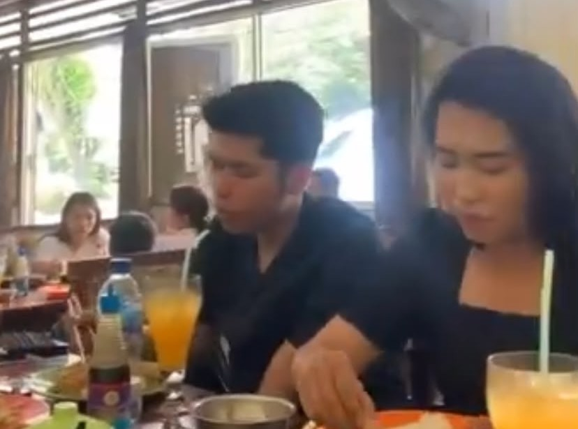
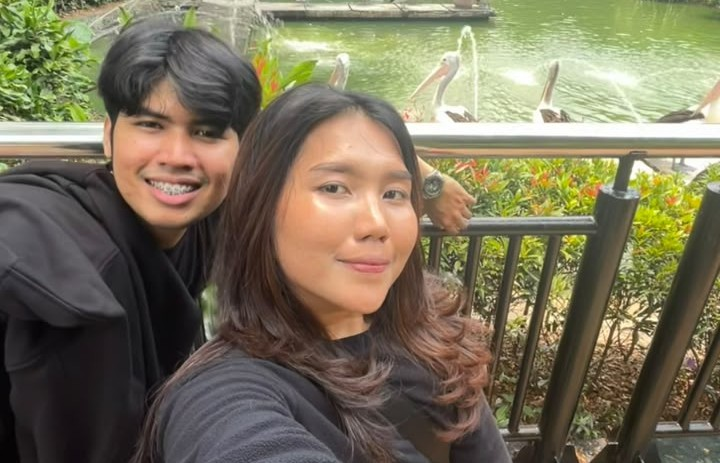
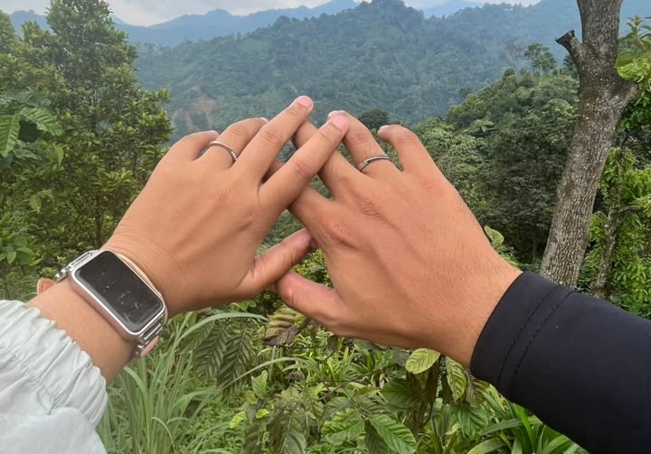
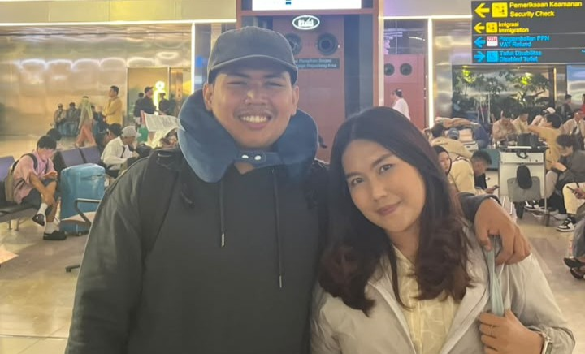
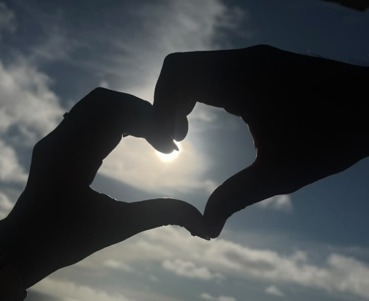

01

12 Februari 2023
The Day We Met
Aku ga pernah nyangka orang yang mungkin waktu itu aku rasa biasa aja, jadi salah satu orang yang berarti di hidup Aku
MADE FOR RICHARD JANICE SYAMRI
Every memory still leads me back to you.
WELCOME HOME
"Home isn't a place. It's you."
How's your heart today?
OUR JOURNEY
These are the moments I never want to forget.

12 Februari 2023
Aku ga pernah nyangka orang yang mungkin waktu itu aku rasa biasa aja, jadi salah satu orang yang berarti di hidup Aku

28 September 2024
Setelah lama ga berhubungan, ga menyangka hari itu first date aku sama kamu. aku happy banget dan menikmati setiap waktu sama kamu. kamu inget ga pas pulang aku nangis kejer banget. itu kali pertama aku takut kehilangan kamu.

27 Januari 2025Kamu bawa cincin yang sudah kita pesan. Walaupun niatnya bukan karena hal spesial. Tapi masih jadi sesuatu yang paling berarti buat aku. Komitmen aku sama kamu.

9 September 2025
Berat banget ya LDR? tapi aku ga pernah nyerah kalau sama kamu. Walaupun jaraknya jauh banget, waktunya beda, tapi setiap momen yang ada, masih terasa ada kamunya. aku sayang kamu, selalu.

TODAY AND EVERYDAYNo matter how difficult things become, every memory still leads me back to you.
WORDS I COULDN'T SAY
There are some words I wanted to tell you, but sometimes writing them feels easier.
OUR LITTLE MOMENTS
Not every memory was a big moment, but every one of them mattered to me.
A LETTER FOR YOU
NO MATTER THE DISTANCE
Even thousands of kilometers can't stop us from choosing each other.
Indonesia
Queensland
Together for
HOW'S YOUR HEART TODAY?
Choose the feeling that feels closest to your heart today.
FOR YOUR HEART
MY LAST GIFT
There's one last thing I want to tell you.
NO MATTER THE DISTANCE
No matter how many kilometers separate Jakarta and Emerald, thank you for becoming one of the best chapters of my life.
ONE LAST THING
THE END
Always choosing you,
Winda
11 Juli 2026
∞